4 Creating a New Project
The first step to analyzing a document is to create a new project. A project is where you select your document, define how to parse it, and choose which tests to perform. Projects organize results (e.g., readability tests, graphs, etc.) and settings into a single file that can be opened later.
In this chapter, we will step through the process of creating a project, explaining all the options available along the way.
4.1 Project Types
To begin, click the New button on the Home tab to display the New Project dialog. This dialog enables you to create either a standard or batch project.
Standard project: Select this option to create a standard project, which can analyze a file, a webpage, or typed text.
Batch project: Select this option to create a batch project, which can analyze a collection of documents or a website.
4.2 Standard Project
To determine a document’s readability you will need to create a new project. First, click the New button on the Home tab to open the New Project wizard. Then select Standard Project and click OK. On the first page of the wizard, the options for specifying the document and its language will be shown:
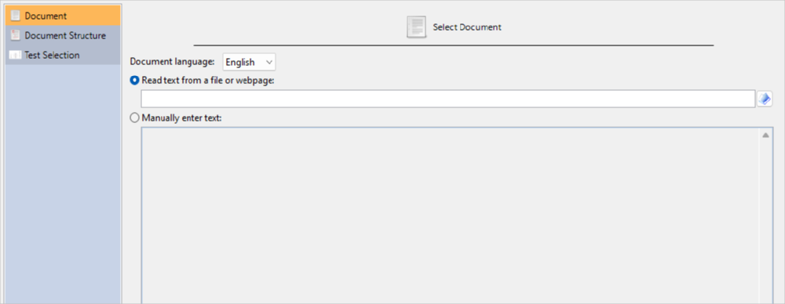
The language option will control how the document is analyzed (e.g., syllable counting). This will also affect which tests, word lists, and grammar features will be available. For example, if we select Spanish, then only Spanish tests will be included, and features related to English word lists (e.g., New Dale-Chall) will not be available. For this example, select English.
The next options specify whether you will be analyzing a file or manually-entered text.
For example, to analyze an email, copy the text from your email program, select the Manually enter text option, and paste it into the text box.
To analyze a file, select the Read text from a file or webpage option. Then click the button next to the file path field and browse to the document:
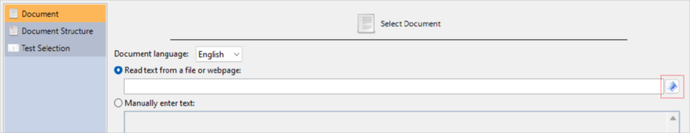
After you have selected your file, click the Forward > button to continue to the Document Structure page, as shown below:
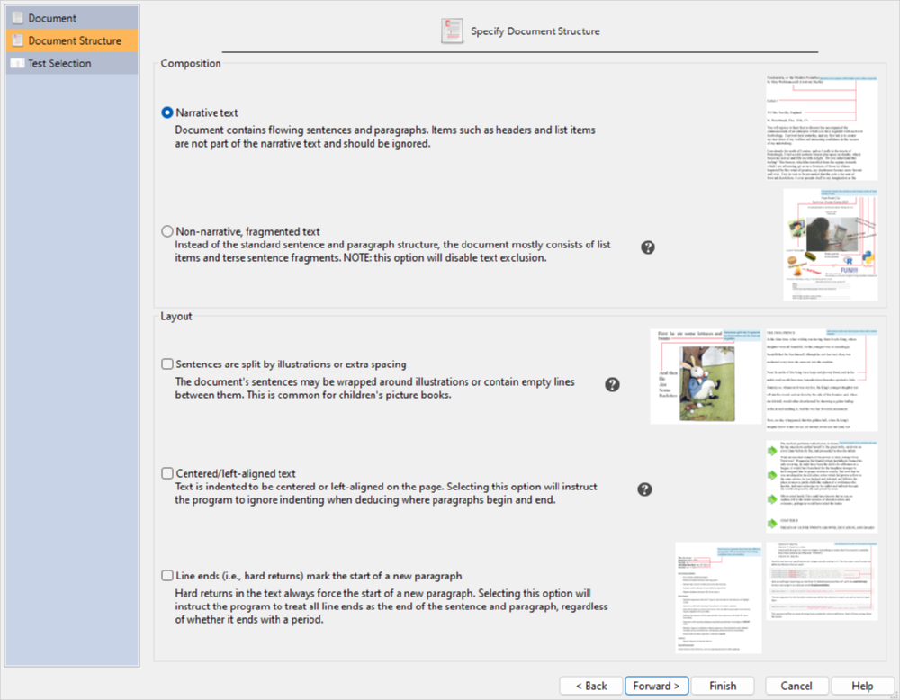
On this page, you will specify the format that best describes your document. The composition types that you can select are either narrative text or non-narrative/fragmented text. These options describe the content of your document and will help the program select the appropriate text exclusion method. The layout options are used to describe the format of the document and will help the program select the appropriate sentence deduction method. For example, if your document is formatted to fit a page and also wraps its text around illustrations, then it is recommended to check the first two Layout options.
Previews of these document formats are shown next to each option. To view the full-size image of any preview, click on it with your mouse.
After specifying your document structure, click the Forward > button to continue to the Test Selection page, as shown below:

On this page, you will select how you want Readability Studio to choose the readability tests to perform. Your first option is to tell the program which type of document you are analyzing and it will select the most appropriate tests based on that. To do this, select the Recommend tests based on document type option. You will then be presented with the Select the type of document… options, where you can select which type of document best describes your file (e.g., a literary work or technical form), as shown below:
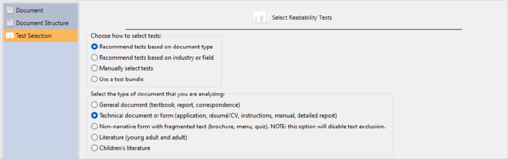
Your second option is to tell Readability Studio which type of industry your document relates to and it will select the most appropriate tests based on that. To do this, select the Recommend tests based on industry or field option. You will then be presented with the Select the type of industry… options, where you can select which field your file relates to (e.g., magazine publishing or the military), as shown below:
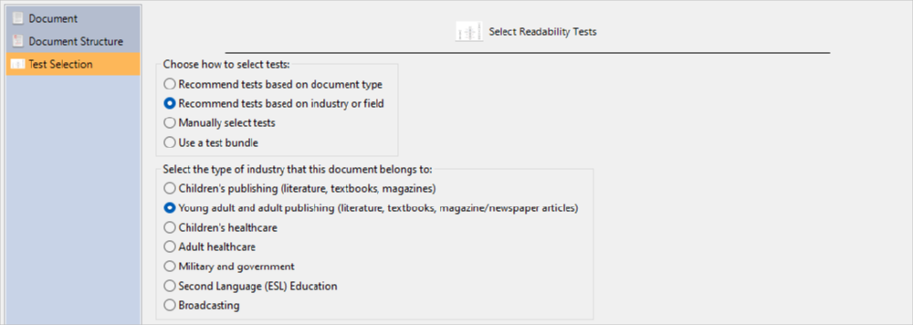
Your third option is to manually select the tests yourself. To do this, select the Manually select tests option. You will then be presented with the Standard tests options, where you can select any of the tests that Readability Studio has to offer, as shown below:
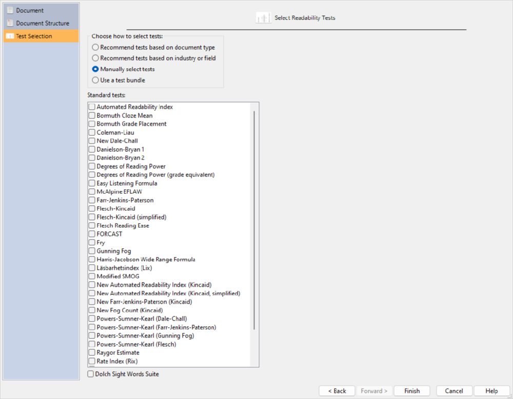
The tests available on this page will depend on the project’s language. For example, if you are manually selecting Spanish tests, then tests such as Crawford will be available, but English tests (e.g., Spache) will not. Also, some industry and document-type options may not have tests associated with them depending on the selected language.
Your final option is to select a test bundle.
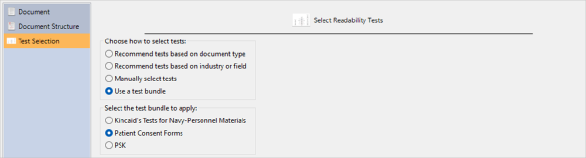
Along with adding tests to a project, test bundles can also include goals to help with reviewing your scores.
Note that you can always add or remove tests from your project at any time. If you select either the document type or industry options, you are not bound to the tests that Readability Studio recommends.
Finally, click the Finish button and the project will be created and will appear like this:
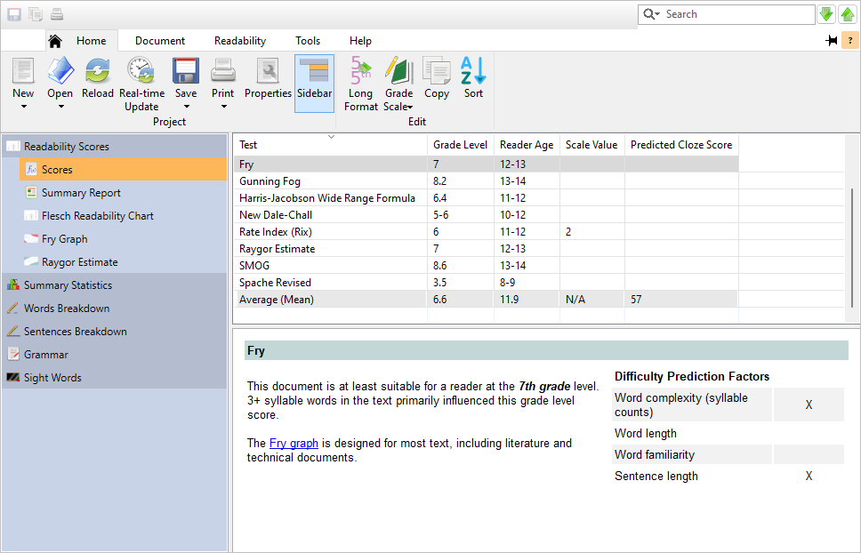
From here, you can review the readability scores and graphs, useful document statistics, and various lists of difficult words. You can also review the document with its difficult words and sentences highlighted.
4.3 Batch Projects
To determine the readability of a document collection, you will need to create a new batch project. First, click the New button on the Home tab to open the Select Project Type dialog, as shown below:
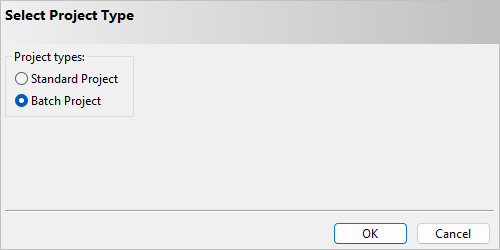
Select Batch Project and click the OK button to proceed to the New Project wizard dialog, as shown below:
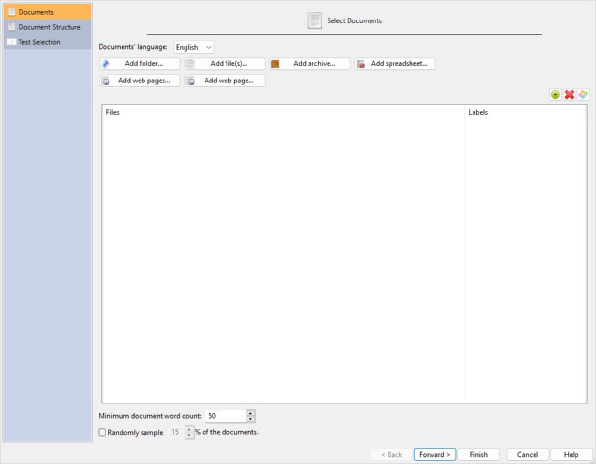
On the first page of this dialog, Documents, are options for selecting your documents and how to specify their language. The language option will control how the documents are analyzed (e.g., syllable counting). This will also affect which tests, word lists, and grammar features will be available. For example, if we select Spanish, then only Spanish tests will be included, and features related to English word lists (e.g., New Dale-Chall) will not be available. For this example, select English.
Now you can add files from a folder, archive file, Excel® 2007 file, or website to the project.
To add files from a folder, click the Add folder button. You will be presented with the Select Directory dialog. On this dialog, you can select the document types to search for, as well as whether to search recursively within the folders.
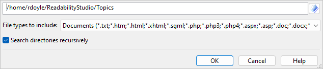
To add files from an archive (i.e., a *.zip file), click the Add archive button. You will be presented with the Select Archive File dialog. Like the Select Directory dialog, you can specify which documents to search for within the archive. (Note that the entire archive will be searched recursively for documents.)
To add documents from an Excel (*.xlsx) file, click the Add spreadsheet button. After selecting an Excel file, you will be prompted for which cells to import. After specifying these, the cells will be imported one of two ways. The first way is if a cell’s content is a file path. In this case, the document referenced by this file path will be loaded into the project. Otherwise, if a cell is not a file path, then its content will be imported as a document itself. In this case, the cell’s name (e.g., B19) will be used as the document’s name.
To search for files from a website and include them in the project, click the Add web pages button. This will display the Web Harvester dialog, as shown below:
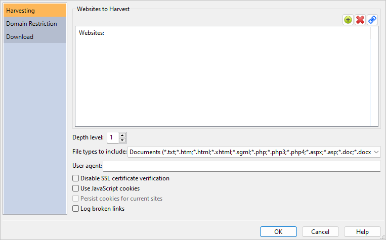
To add an individual web page to the project, click the Add web page button. This will display a text box where you can enter the web page’s path.
You can also select local files to include in the project. Click the Add file(s) button and then select the file(s) that you want to include.
As you add files to the project, you can also include a helpful description next to any file. Double-click in the Description column next to any filename, and then type a description to be attached to that file. When the batch project is loaded, this description will appear in any results window that displays filenames. (Note that for some file formats, the program will fill this field with the document’s subject or title information if you leave it blank.)
After you have selected your files, you can randomly sample a subset of these documents for your project. Normally, you will want to analyze all the documents that you have selected and ignore this feature. However, some research projects may require random sampling. For these situations, check the % of documents to randomly sample option and enter the percentage of documents to analyze.
You can also filter documents based on content size. Enter into the field Minimum document word count the minimum number of words a document must have to be included in the batch. Any document that does not meet this threshold will be ignored during import.
Note that when the project is first analyzed, the documents that were not included in the sample will be removed from the project.
Clicking the Forward > button will move to the Document Structure and Test Selection pages. Refer to Section 4.2 for an explanation of these pages.
After you have specified your document structure and tests, click the Finish button to create the project, as shown below:
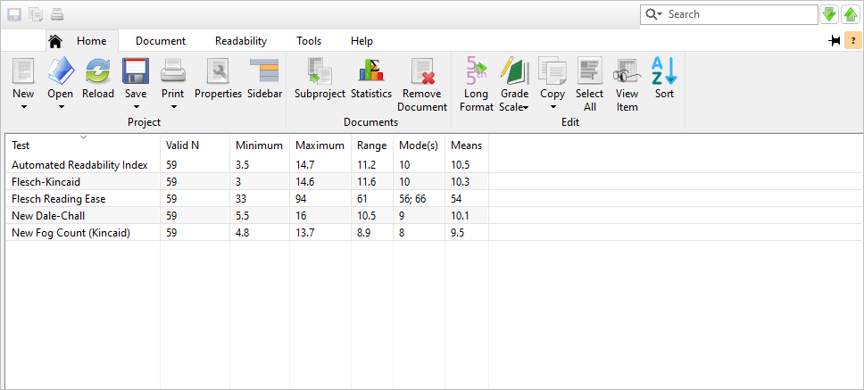
From here, you can review the readability scores, box plots, histograms, readability graphs, Dolch statistics, and difficult words. You may also want to review any warnings that were encountered while analyzing the documents.